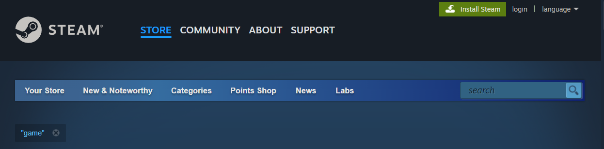
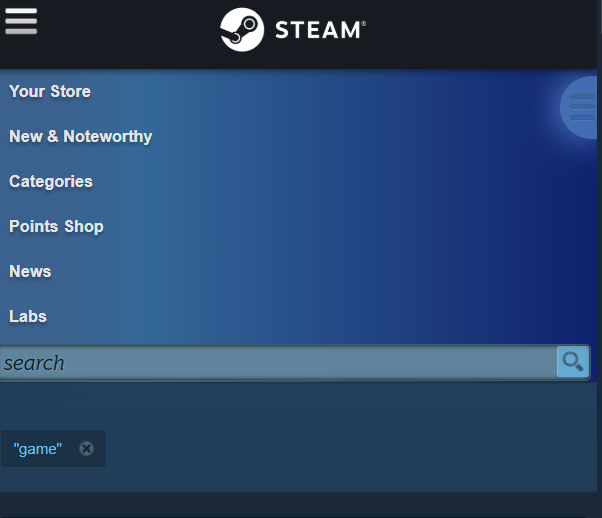
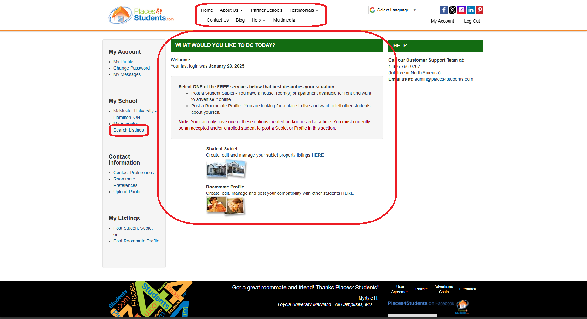
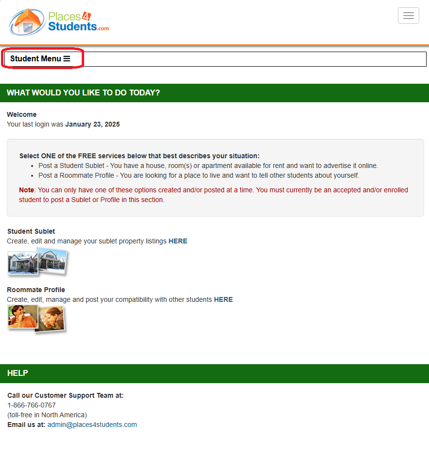

The website “steam” fulfills all of the user interface design principles.
Link to good website
The navigation bar is always visible at the top of the screen. The navigation bar has “your store” as a home page. This ensures if the user ever gets lost on the page they can easily return to the home.
All clickable links are in large clickable boxes. In the photo the entire game box is clickable.
When the screen is smaller elements adjust to be vertical to be more usable on a smaller screen.
When in desktop mode there is a tab for filtering searches. When on a smaller window or mobile the filter tab can be opened with a button on the side of the screen. This gives more screen space on smaller screens to hide an element that does not always need to be shown but is still easily accessible.
Less important details are hidden on smaller screens. For example on desktop site each game has the date it was published. On smaller screens they hide that information to more effectively use the screenspace.
Every page has the same layout. The top is a large element and features a new popular game. The middle are a few popular games and the bottom are smaller less popular games. This is consistent across most pages. This will tell the user that the top of the page usually has the newest most popular content on every page.
Here is the link to a terrible website
https://www.places4students.com
Places4Students is an extremely badly designed website that violates multiple design principles such as consistency, ease of navigation, and universal usability. In terms of consistency, the site has multiple different designs and themes depending on whether the user has logged in, which creates confusion within the user as to what site they are actually accessing. Additionally the design of the changes depending on the page once logged in as well, with colors and themes randomly changing. However for the purposes of the site itself it does not greatly impact usability. Universal usability is also an issue the site faces, with mobile users basically being unable to use the app because of improper scaling as well as badly designed navigation features for mobile. You must somehow intuitively find the navbar and from there find the search listings button in order to use the site for the purpose that 90% of its users are looking for.
The greatest sin of the site however is it's navigation issues. It is extremely difficult to find what you are actually looking for amongst the many meaningless features built into the site. The site does not allow you to search by location or by words within the listing meaning that unless you save a listing yourself, it is very difficult to find the house you were previously looking at. Additionally, landlords abuse the tags section of the site, advertising single bedrooms as 4 bedroom apartments and not bothering to take down or update the listing after renting out all the slots. It would be an undertaking to improve the site so that it follows the design principles it currently doesn't however it serves as a warning sign as to the mistakes that we should avoid making in our future projects.
